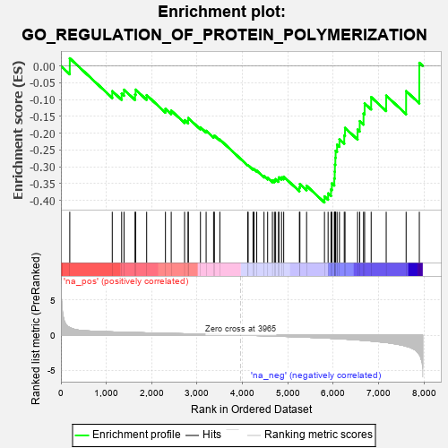
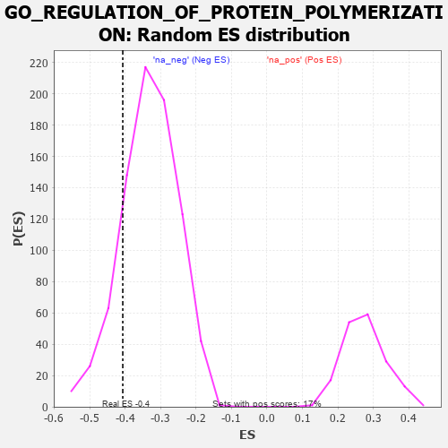

| | | Dataset | 7d |
| Phenotype | NoPhenotypeAvailable |
| Upregulated in class | na_neg |
| GeneSet | GO_REGULATION_OF_PROTEIN_POLYMERIZATION |
| Enrichment Score (ES) | -0.40657634 |
| Normalized Enrichment Score (NES) | -1.2243708 |
| Nominal p-value | 0.16707022 |
| FDR q-value | 0.5933096 |
| FWER p-Value | 1.0 |
Table: GSEA Results Summary

Fig 1: Enrichment plot: GO_REGULATION_OF_PROTEIN_POLYMERIZATION
Profile of the Running ES Score & Positions of GeneSet Members on the Rank Ordered List
| PROBE | GENE SYMBOL | GENE_TITLE | RANK IN GENE LIST | RANK METRIC SCORE | RUNNING ES | CORE ENRICHMENT | | 1 | TPPP3 | | | 195 | 1.079 | 0.0230 | No |
| 2 | NCK2 | | | 1131 | 0.458 | -0.0749 | No |
| 3 | TBCD | | | 1338 | 0.422 | -0.0823 | No |
| 4 | FKBP4 | | | 1390 | 0.412 | -0.0706 | No |
| 5 | DRG1 | | | 1633 | 0.368 | -0.0850 | No |
| 6 | TPPP | | | 1646 | 0.365 | -0.0704 | No |
| 7 | PAK3 | | | 1889 | 0.322 | -0.0867 | No |
| 8 | WASF1 | | | 2303 | 0.259 | -0.1275 | No |
| 9 | MET | | | 2430 | 0.240 | -0.1328 | No |
| 10 | SLIT2 | | | 2724 | 0.195 | -0.1612 | No |
| 11 | FER | | | 2803 | 0.183 | -0.1630 | No |
| 12 | BRK1 | | | 2805 | 0.183 | -0.1551 | No |
| 13 | MAP2 | | | 3074 | 0.140 | -0.1827 | No |
| 14 | TWF1 | | | 3199 | 0.123 | -0.1930 | No |
| 15 | FMN1 | | | 3363 | 0.095 | -0.2094 | No |
| 16 | GMFB | | | 3381 | 0.091 | -0.2075 | No |
| 17 | FES | | | 3501 | 0.077 | -0.2191 | No |
| 18 | MTOR | | | 4114 | -0.025 | -0.2954 | No |
| 19 | ABL1 | | | 4125 | -0.027 | -0.2954 | No |
| 20 | ARPC2 | | | 4232 | -0.047 | -0.3067 | No |
| 21 | ARL2 | | | 4254 | -0.050 | -0.3072 | No |
| 22 | BAG4 | | | 4314 | -0.061 | -0.3119 | No |
| 23 | EPS8 | | | 4474 | -0.088 | -0.3281 | No |
| 24 | ABI2 | | | 4554 | -0.106 | -0.3334 | No |
| 25 | ARPC3 | | | 4659 | -0.129 | -0.3408 | No |
| 26 | ARF6 | | | 4704 | -0.140 | -0.3402 | No |
| 27 | WASF3 | | | 4730 | -0.145 | -0.3370 | No |
| 28 | FLII | | | 4795 | -0.156 | -0.3382 | No |
| 29 | TPPP2 | | | 4800 | -0.157 | -0.3318 | No |
| 30 | DLG1 | | | 4860 | -0.169 | -0.3318 | No |
| 31 | CAPZB | | | 4908 | -0.179 | -0.3298 | No |
| 32 | SSH1 | | | 5254 | -0.258 | -0.3620 | No |
| 33 | PICK1 | | | 5265 | -0.263 | -0.3517 | No |
| 34 | LATS1 | | | 5412 | -0.298 | -0.3569 | No |
| 35 | BBS4 | | | 5806 | -0.407 | -0.3886 | Yes |
| 36 | ARPC4 | | | 5886 | -0.430 | -0.3796 | Yes |
| 37 | DCTN1 | | | 5950 | -0.454 | -0.3676 | Yes |
| 38 | TTBK1 | | | 5969 | -0.460 | -0.3495 | Yes |
| 39 | JMY | | | 6023 | -0.479 | -0.3351 | Yes |
| 40 | CKAP5 | | | 6032 | -0.482 | -0.3148 | Yes |
| 41 | RAC1 | | | 6036 | -0.484 | -0.2939 | Yes |
| 42 | ADD2 | | | 6046 | -0.487 | -0.2735 | Yes |
| 43 | EVL | | | 6052 | -0.490 | -0.2525 | Yes |
| 44 | DBNL | | | 6084 | -0.501 | -0.2344 | Yes |
| 45 | GBA2 | | | 6136 | -0.515 | -0.2181 | Yes |
| 46 | VDAC2 | | | 6242 | -0.553 | -0.2070 | Yes |
| 47 | SVIL | | | 6259 | -0.558 | -0.1844 | Yes |
| 48 | KANK1 | | | 6536 | -0.678 | -0.1893 | Yes |
| 49 | ARF1 | | | 6583 | -0.701 | -0.1642 | Yes |
| 50 | CLIP1 | | | 6667 | -0.746 | -0.1418 | Yes |
| 51 | PAK1 | | | 6691 | -0.757 | -0.1114 | Yes |
| 52 | FHOD3 | | | 6835 | -0.834 | -0.0926 | Yes |
| 53 | COTL1 | | | 7166 | -1.046 | -0.0882 | Yes |
| 54 | KANK3 | | | 7605 | -1.559 | -0.0747 | Yes |
| 55 | CAV3 | | | 7896 | -2.739 | 0.0095 | Yes |
Table: GSEA details [plain text format]

Fig 2: GO_REGULATION_OF_PROTEIN_POLYMERIZATION: Random ES distribution
Gene set null distribution of ES for GO_REGULATION_OF_PROTEIN_POLYMERIZATION